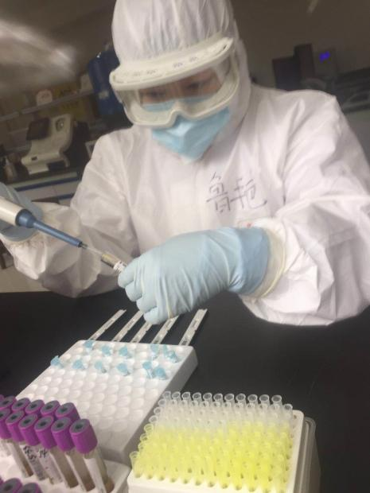
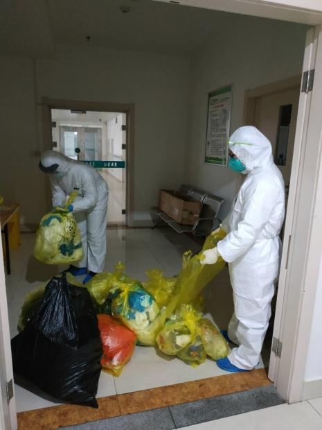
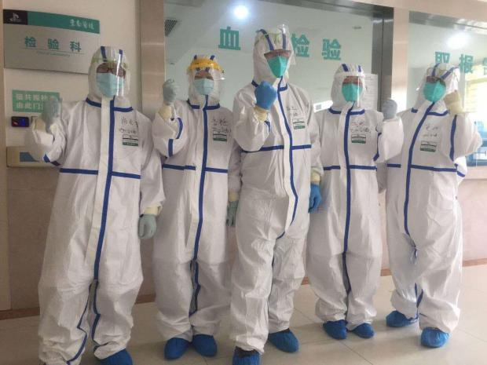

作家方方：武汉市中心医院难以承受之重-作家方方-财新博客-新世纪的常识传播者-财新网
原文链接 备份链接 3月3日。 依然天阴，有点冷嗖嗖的。我在郊区的邻居一早发给我照片。留言说，你家的海棠开花了，你的微信文被封了。微信内容被封，我已习惯。但海棠开花却实在让人高兴。去年夏秋，一直大旱。树叶全枯并且掉光，我很担心这棵树会死 …
作者：孝感市中心医院医学检验科 黄晶
1月31日，孝感市中心医院根据市委市政府统一安排，对孝感市东南医院进行全面改造，用于收治新冠肺炎疑似病人。第一天收治了39名病人，到2月2日就增加到136名病人，随着病人的激增，东南医院检验人手不够，急需派人支援。2月2日上午刘自刚副主任去东南医院实地考察后，发现至少需要派4名专业骨干到东南医院去支援。中心医院检验科的王少敏主任在科室微信群里吹响了东南医院的“集结号”，微信群响起了此起彼伏的报名声，我也主动要求到东南医院去，当天东南医院“检验小分队”成立，鲁艳老师负责生物安全，我负责质量控制，尚贞君老师负责协调，高进负责保障。
记得那天，当我把工作任务告知给家人时，他们很担心我，但都能理解我的职责与使命，并积极支持我的决定。爸妈宽慰地对我说：“你在疫情一线，安心工作，一定要做好防护，照顾好孩子的任务就交给我们了。”因为时间紧迫，我来不及与家人共进午餐，只是匆匆地拿了生活用品。在我离开家门的那一刻，我三岁的女儿拉着我的双手，眼中含着晶莹的泪珠，依依不舍地对我说：“妈妈，你能早点回来吗？我和爸爸都想你。”看着家人目送我的眼光，我也哽咽了……
2月3号上午在刘主任的带领下我们来到孝感市东南医院，我的心情既紧张又兴奋，到了一个陌生的工作环境怎样才能不付重托让我紧张，但有领导的认可，为抗击疫情贡献自己的一份力量又让我兴奋。现实总是会给人“惊喜”，当到东南医院检验科时，我一下子就震惊了，情况比我们想象的差太多，东南医院检验科包括毛主任总共只有三名员工，负责人毛主任六十多岁，同时患有冠心病，是新冠的易感人群，最好不进入实验室工作。虽然她不顾危险，多次要求上一线工作，但我们一直进行阻拦。而且这里工作环境也比想象中的差很多，大多数检验项目均需手工操作，需要频繁的开盖加样，整个实验室连一台空气消毒机都没有，也没有工作人员专用的洗手池，更别说实验室按照院感的要求进行分区，存在非常大的安全隐患！
军令如山，时间就是生命，我们已经不能再去多想！说干就干！刘主任带领孙振坤和刘瑞菡调配和安装从总院带来全自动血球仪，尿液分析仪，免疫分析仪，离心机和空气消毒机。他们一起小心翼翼的搬着这些贵重的仪器，一台离心机就一百多斤重，几个来回，汗水湿透了他们的衣服…..调试完仪器后，刘主任发现我们连最基本的带盖式垃圾桶都没有，各种防护物品也比较匮乏，他连午饭都顾不上吃，又匆忙赶回总院，帮我们领取各种物资。
鲁艳老师是我们东南医院”检验小分队“的领军人物和精神领袖，做为微生物专业和院感方面的专家，她主动承担起东南医院检验科实验室生物安全和后勤工作。她是一名共产党员，她以实际行动践行不忘初心，牢记使命的责任。2月3日的鲁艳姐没有片刻休息，她才在发热门诊下夜班，持续工作到上午11点钟，刘主任看到她实在太累了，就让她回家休息。下午3点钟时，大家看到鲁艳姐的身影又出现在东南医院，原来她听说有一批防护物资和设施马上到东南医院，顾不上休息匆忙赶过来“抢”防护物资和设施。然后她又开启了“大妈”模式，清洁、消毒、分区，规范流程、人员培训、分配工作。一直干到晚上9点钟，看到焕然一新的工作间，初步分区的实验室，安全到位的进场模式，她才安心的休息下来。在以后每天的“战斗”中她都检查和督促我们每个人按照院感的要求做好个人防护，她一再跟我们强调：“不管实验室条件多么差，我要确保你们每一个人都不被感染。”当天的我、尚贞君、高进也是整整忙了一天，晚上一切都安排妥当后，刘主任离开时，勉励我们说道：“我们代表着中心医院检验科的形象，第一，要保护好进场的每一个人员；第二，一定要做好质量把关，克服困难，认真、及时、准确的发好每一份检验报告单。”

“战斗来的太惨烈！”从1月31日到2月3日我们接管东南医院时已收治疑似病人172例，此时检验科已累计有400多份标本没有处理，临床医生一直在催结果。我们也急得像热锅上的蚂蚁。为了及时的发出检验报告，2月4日早上8点鲁艳姐立刻组织我们召开小组会议，决定放弃休息时间，加班加点也一定要把所有报告在今天发出。虽然没有先进的设备，没有完备的lis系统，没有生物安全柜，但我们因陋就简，迎难而上，大家一起放弃午休，错过饭点，终于在晚上9点钟，把所有的检验报告全部发出，晚上我们一起头顶着星光，吃着泡面，心里才畅快、踏实。
东南医院检验科所有检验仪器都没有连lis接口，导致所有的检验报告需要工作人员自制电子表格和报告模板，输入患者的信息，然后从仪器上把结果抄录到电子表格上保存并打印。这样无形增加了我们大量的工作，工作方式回到了十年前，延长了检验结果的报告时间。按刘主任的要求，作为质量和技术主管的我要负责建立东南医院检验科规范的操作流程，多次和东南医院的lis工程师沟通联系，连续几个晚上在实验室反复进行调试，终于给每个检验项目建立了标准的报告模板，让每份标本都贴上唯一条码，所有标本的信息都可以通过扫码枪录入系统，我们只需要把结果手工输入到系统里面再打印出来，这样大大提高了我们的工作效率。虽然比不了本院的信息化实验室，但我们已经很满足了。
在我们团队中的高进是一名90后，一家三口因为疫情而分离，却各自坚守在自己的岗位。他每天主动承担着做高风险的手工项目，对疑似病人的血液标本反复开盖和混匀加样，还要将血液标本进行离心，此时高速旋转的离心机会产生大量携带病毒的气溶胶，在明知道存在很大的被感染的风险情况下，他没有想太多，只知道自己的职责和使命所在。还有尚贞君老师，“战斗”打响时，检验的各种“火线”，他都积极报名；当主任通知尚贞君到东南医院检验科来支援时，他义不容辞，挺身而出，东南医院的检验项目很杂，不管安排他做什么检验项目，他都毫无怨言，服从安排，默默无闻的做好工作。


一路探索，风雨兼程，在这里我们不仅要做好日常检验工作，因为没有卫生员，每天一早一晚大家还要对整个实验室进行卫生消毒，穿着厚厚的防护服进行物表、桌面和地面的消毒，坚决不放过每个卫生死角。消毒完后，我们还要把所有的医疗废物进行打包，亲自运送到垃圾中转站。每次做完卫生消毒，我们的头发早已是湿辘辘的了，衣服闷在不透气的防护服里都能拎得出水来。我们却自嘲说：“这是免费的汗蒸啊！”真正是苦中作乐, 其乐无穷。

时光荏苒，烁烁征程，东南医院“检验小分队”转眼已经成立快一个月了，大家披荆斩棘，争先垂范，恪尽职守，同德共心，砥砺前行，得见新颜。领导的重托和关心，中心医院人的精神和内涵，是我们战斗不止的动力，疫情无情人有情，让我们一起全力以赴。不获全胜，决不收兵！
注：本文经授权转载。
财新博客版权声明：财新博客所发布文章及图片之版权属博主本人及/或相关权利人所有，未经博主及/或相关权利人单独授权，任何网站、平面媒体不得予以转载。财新网对相关媒体的网站信息内容转载授权并不包括财新博客的文章及图片。博客文章均为作者个人观点，不代表财新网的立场和观点。
原文链接 备份链接 3月3日。 依然天阴，有点冷嗖嗖的。我在郊区的邻居一早发给我照片。留言说，你家的海棠开花了，你的微信文被封了。微信内容被封，我已习惯。但海棠开花却实在让人高兴。去年夏秋，一直大旱。树叶全枯并且掉光，我很担心这棵树会死 …
原文链接 备份链接 昨天立春。今天（2月5日）的天气果然就像春天。我家门前有一排老香樟和两株桂花一棵玉兰，树叶都绿得仿佛冬天根本没有来过。 今天仍然处在专家们预计的疫情高峰期中。确诊病人数字据说还在上升。一个我所知的著名画家也处于病危之 …
原文链接 备份链接 今天（2月4日）天气依然很好。武汉市民生活还是很平稳。闷是有一点，但只要活着，闷是能忍住的。 下午突然听到有人再度恐慌，去超市抢购，说是担心超市关门，断了吃喝。我想这个大概不会吧？市府似乎就此发了一个声明，即保证超市不 …
原文链接 备份链接 [* 童兰 ](/author/100001342.html) 第一财经记者从中国科学院武汉病毒研究所了解到，研究所正在地方卫生管理部门的指挥下做相关病原检测方面工作，预计很快会有检测结果。 针对武汉不明原因肺 …